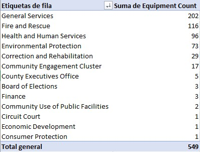
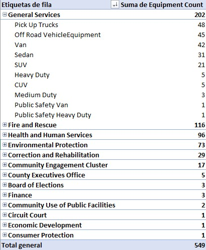

Data Analisys
The quantity of equipment can be obtained by summing column C, resulting in 549 vehicles. The data shows a highly uneven distribution of equipment, with minimum values indicating specialized or low-demand usage, while maximum values highlight operationally critical departments. The average serves only as a general reference due to high variability. We could make an extensive analisys with a pivot table

The distribution of equipment is highly concentrated in operational departments such as General Services and Fire and Rescue, while administrative departments show minimal allocation. This reflects functional priorities rather than an even distribution.
General Services’ fleet is primarily composed of utility and off-road vehicles, reflecting its role as an operational support department across multiple functions.
